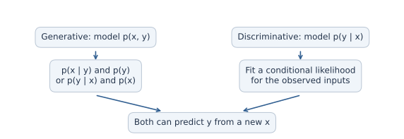
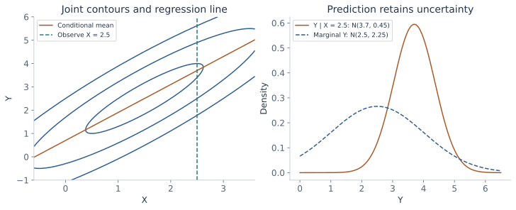
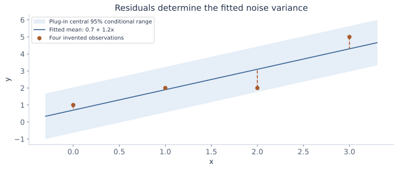
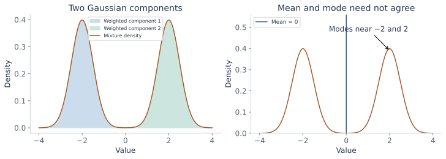
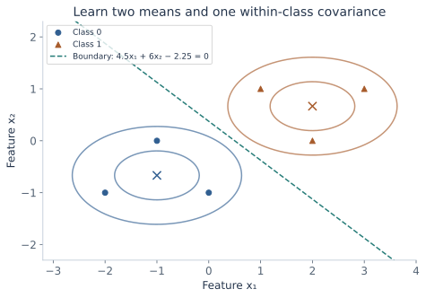
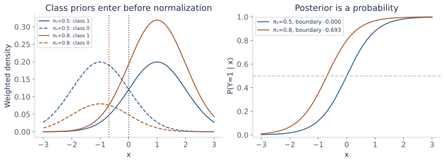
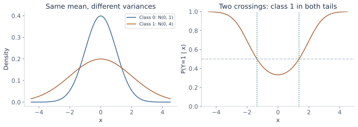

Statistical regression and
Gaussian classification
Learn a distribution from data, turn it into a prediction, and derive the boundary between classes. Follow the path from Gaussian conditioning to least squares and discriminant analysis.
The probability and Gaussian chapter explained what a model implies when its parameters are known. Now we learn those parameters from observations. The same Gaussian machinery will predict a numerical response in regression and a discrete label in classification.
This chapter combines the statistical-regression lecture and its Gaussian discriminant analysis continuation. It expands the estimation calculations, the handwritten question about joint versus conditional likelihood, and the decision-boundary derivation. Gaussian mixtures appear as a limitation of a single bell-shaped model. Logistic regression, unequal covariances, and cost-sensitive decisions are clearly identified connections beyond the core shared-covariance classifier.
What you should be able to do afterward
- Distinguish a generative model, a conditional model, a likelihood, and a prediction rule.
- Derive Gaussian maximum-likelihood estimates of the mean and covariance, including their conditions of existence.
- Use a joint Gaussian to derive regression coefficients and residual variance; connect the fitted result to ordinary least squares.
- Explain when joint and conditional likelihood fitting agree and why Bayes' rule alone does not establish that agreement.
- Derive the prior, class means, and pooled covariance of Gaussian discriminant analysis.
- Normalize class scores into posteriors, derive the linear decision boundary, and explain the effect of priors and covariance assumptions.
Reading route: sections 1–6 build statistical estimation; 7–10 complete regression and its worked example. Sections 11–12 explain mixtures and the logistic connection. Sections 13–18 develop Gaussian classification. Work through one route at a time and return to the revision sheet after attempting the problems.
Contents · choose a section
1. A model, a fitting rule, and a prediction rule
Lecture connection: the statistical/non-statistical model-building map and generative/discriminative branches.
A supervised dataset consists of pairs \(D=\{(x_i,y_i)\}_{i=1}^N\), where the input is a column vector \(x_i\in\mathbb R^d\). For regression, yᵢ is a real number; for the binary classifier later, yᵢ is 0 or 1. N counts observations, while d counts features. A parameter θ describes what the model learns. We use different letters for specialized parameters once their roles are clear.
There are three separate choices. A model family states what distributions or functions are possible. A fitting criterion chooses parameters from the data. A prediction rule turns the fitted model into an action. A straight line can be fitted by squared error without first stating a noise distribution. Alternatively, a Gaussian-noise model can lead to that same squared-error criterion by maximum likelihood. The algebra may coincide while the interpretation and additional predictions differ.
A generative approach models a joint distribution. In classification it commonly uses p(x|y) together with p(y): how features vary within a class and how frequent each class is. These define p(x,y)=p(x|y)p(y), from which Bayes' rule gives p(y|x). A discriminative approach can model p(y|x) directly without specifying the feature distribution p(x). Discriminative methods can also learn a decision function without a full conditional probability model.

A generative model can also generate synthetic pairs: sample a label from its prior, then sample features from the corresponding class density. A conditional predictor can generate a response given an input, but it does not thereby supply a model for generating the inputs. Neither label promises that its assumptions match a particular dataset.
2. Maximum likelihood: vary parameters, hold observations fixed
Lecture connection: estimating parameters through products over independent examples.
For independent and identically distributed observations \(z_1,\ldots,z_N\), a likelihood is the joint mass or density evaluated at the observed data, regarded as a function of θ:
“Independent” justifies the product; “identically distributed” says each observation uses the same distributional parameters. Dependencies across examples require a different factorization. A continuous observation contributes a density, not a positive probability of exactly that point. A likelihood is not a normalized probability distribution over θ. A Bayesian posterior over parameters would additionally need a parameter prior and normalization.
Taking logarithms changes multiplication into addition. Because log is strictly increasing on positive values, it preserves the maximizer:
This is also numerically useful: products of many small densities can underflow. Minimizing the negative log-likelihood gives the same answer. A term can be dropped only if it is constant in the variable being optimized. A density's normalizer may depend on a variance that is being learned.
Write the conditional direction explicitly
These are three different objectives. The first can be factored as either conditional plus the relevant marginal. Fixing observed xᵢ does not make pθ(xᵢ) constant in θ. Later we will find a particular Gaussian parameterization in which joint fitting separates, and a particular GDA parameterization in which fitting class densities separates from fitting class priors. Those are properties to establish, not consequences of merely writing Bayes' rule.
3. A joint Gaussian becomes a regression model
Lecture connection: the joint model for [Y,X], the parameter-count annotation, and Gaussian conditioning.
Assume that a scalar response Y and d-dimensional input X are jointly Gaussian:
The cross-covariance ΣYX is a 1×d row; ΣXY is its d×1 transpose. Assume the full covariance is positive definite. Then ΣXX is invertible and the conditional Gaussian from the previous chapter gives:
Define a d×1 coefficient vector \(\beta=\Sigma_{XX}^{-1}\Sigma_{XY}\), and intercept \(a=\mu_Y-\beta^\top\mu_X\). The conditional mean becomes \(m(x)=a+\beta^\top x\). A linear prediction function has emerged from a distributional assumption. The conditional variance is constant in x in this model, while the mean moves with x.
The intercept matters: “linear regression” commonly includes this affine offset. It can be folded into a dot product by augmenting each input with a leading 1. The joint model has d+1 means and (d+1)(d+2)/2 distinct covariance entries. The latter count is 1 response variance, d cross-covariances, and d(d+1)/2 input-covariance entries. Symmetry means we do not learn both copies of each off-diagonal entry.

The earlier additive-noise model \(Y=a+\beta^\top X+\varepsilon\), with ε independent of X and ε∼N(0,τ²), gives the same conditional Gaussian. It does not require X itself to be Gaussian. Joint Gaussianity is the stronger assumption used when we also model the distribution of X.
4. Why predict the conditional mean?
Lecture connection: predicting by the peak of a conditional density and the sketches of non-Gaussian conditional shapes.
A fitted distribution is not yet a unique prediction rule. Under squared-error loss, choose a number c minimizing the conditional expected loss. Let m=E[Y|X=x]. Expanding around m gives:
The cross term vanishes because E[Y−m|X=x]=0. The variance term does not change with c, so the minimum is attained at c=m. This argument needs a finite second moment but does not need a Gaussian. Absolute-error loss instead leads to a conditional median. Different losses answer different prediction questions.
The lecture also writes a density maximizer: \(\operatorname*{arg\,max}_y p(y\mid x)\). This selects a conditional mode. For an ordinary Gaussian, mode, mean, and median coincide, so both routes give a+βᵀx. For a multimodal distribution, the mean can lie between peaks. Maximizing a continuous density is not the same as maximizing the probability of an exact real-valued response, which is zero in a density model.
If parameters were known, a Gaussian conditional puts about 95% of future responses in m(x)±1.96τ. Substituting fitted parameters gives a plug-in conditional range. It does not account for uncertainty in the fitted mean or variance and is not a confidence interval for a regression coefficient. The figures use it only to visualize residual response variation.
5. Estimate a Gaussian mean from data
Lecture connection: the multivariate Gaussian maximum-likelihood slide, repeated in both lectures.
Temporarily use zᵢ∈ℝᵖ for any p-dimensional Gaussian observation. For regression, zᵢ=[yᵢ,xᵢᵀ]ᵀ and p=d+1. Assume independent observations with common mean μ and positive-definite covariance Σ. Taking logs of their Gaussian densities gives:
The determinant controls how much volume the model assigns to its spread. The quadratic term measures how far the data fall from the proposed mean relative to that spread. Both terms depend on Σ; keeping only the quadratic would let increasing the covariance avoid distance penalties without the corresponding volume penalty.
For a symmetric matrix M, differentiating (z−μ)ᵀM(z−μ) with respect to μ gives −2M(z−μ). This follows by expanding the quadratic into zᵀMz−2μᵀMz+μᵀMμ. Thus:
The Hessian in μ is −NΣ⁻¹, negative definite for positive-definite Σ. Therefore the sample mean is the unique maximizing mean for every fixed allowed covariance. This also means we can substitute μ̂ before optimizing the covariance.
6. Derive the covariance estimate using a trace
Lecture connection: the trace trick, derivative with respect to precision, and the covariance estimate.
The trace converts a quadratic form into a matrix inner product
The trace tr(A) is the sum of A's diagonal entries. For compatible matrices, tr(AB)=tr(BA); a scalar equals its own trace. If r is a p×1 residual, then:
The outer product rrᵀ is p×p. It is not the scalar squared length rᵀr and is not an elementwise square. This is the precise matrix meaning of the squared-residual shorthand in the handwritten covariance formula. Let \(T=\sum_i(z_i-\bar z)(z_i-\bar z)^\top\). Since log|Σ|=−log|Λ|, the variable part of the likelihood is:
Two matrix-derivative rules are enough: the derivative of log|Λ| is Λ⁻ᵀ, and the derivative of tr(ΛT) is Tᵀ. The first follows from the differential d log|Λ|=tr(Λ⁻¹ dΛ); the second follows by expanding the trace entry by entry. For symmetric Λ and T, the rules simplify to ordinary inverses and untransposed T.
To see the log-determinant rule, perturb Λ by tH. Factor the determinant as \(|\Lambda+tH|=|\Lambda|\,|I+t\Lambda^{-1}H|\). Expanding a determinant near I gives \(|I+tM|=1+t\operatorname{tr}(M)+O(t^2)\): its first-order contributions are the diagonal changes. Taking the log and differentiating at t=0 yields \(\frac{d}{dt}\log|\Lambda+tH|\big|_{t=0}=\operatorname{tr}(\Lambda^{-1}H)\). This directional derivative is what the matrix gradient represents.
Why this stationary point is the maximum, when it exists
If S=T/N is positive definite, put C=S¹ᐟ²ΛS¹ᐟ². The symmetric square root S¹ᐟ² keeps S's eigenvectors and takes positive square roots of its eigenvalues. Apart from a constant, the precision objective is (N/2)(log|C|−tr(C)). For each positive eigenvalue λ of C, log λ−λ is maximized uniquely at λ=1: its derivative is 1/λ−1 and its second derivative is negative. Hence C=I, Λ=S⁻¹, and Σ=S is the global maximum.
If S is singular, there is no positive-definite covariance MLE in this unrestricted full-dimensional model. Shrinking covariance in a direction with no observed residual variation can make the likelihood unbounded. Reporting S as a sample covariance is still meaningful, but inserting it into an inverse/determinant density is not. The centered scatter has rank at most N−1, so N≥p+1 is necessary for full rank; the points must also span all p directions after centering.
Why the denominator is N rather than N−1
Maximum likelihood and unbiased estimation are different criteria. With an unknown mean, the likelihood calculation gives T/N. For independent observations with finite population covariance, E[T]=(N−1)Σ; therefore T/(N−1) is an unbiased covariance estimator. The likelihood estimate is biased downward at finite N. Neither denominator should be silently substituted for the other. Regression residual variance will have another degrees-of-freedom correction because it fits more than one coefficient.
7. Fit a complete small Gaussian regression example
The following four observations are invented for transparent arithmetic:
| i | xᵢ | yᵢ | xᵢ−1.5 | yᵢ−2.5 |
|---|---|---|---|---|
| 1 | 0 | 1 | −1.5 | −1.5 |
| 2 | 1 | 2 | −0.5 | −0.5 |
| 3 | 2 | 2 | 0.5 | −0.5 |
| 4 | 3 | 5 | 1.5 | 2.5 |
The fitted means are μ̂X=1.5 and μ̂Y=2.5. The centered sums are ∑(xᵢ−x̄)²=5, ∑(yᵢ−ȳ)²=9, and ∑(xᵢ−x̄)(yᵢ−ȳ)=6. Dividing by N=4 gives SXX=1.25, SYY=2.25, and SYX=1.5. In [Y,X] order:
Conditioning the fitted joint Gaussian gives:
The fitted mean is ŷ=0.7+1.2x. At the observed x values, predictions are 0.7,1.9,3.1,4.3; residuals yᵢ−ŷᵢ are 0.3,0.1,−1.1,0.7. Their squared sum is 0.09+0.01+1.21+0.49=1.8, and 1.8/4=0.45 matches the conditional variance. At x=2.5, the predicted response distribution is N(3.7,0.45), with standard deviation about 0.6708.

8. Conditional Gaussian likelihood gives least squares
Lecture connection: revisit the earlier linear-noise model and compare conditional with joint fitting.
Now specify only \(Y_i\mid x_i\sim\mathcal N(a+\beta^\top x_i,\tau^2)\), independently across observations conditional on the inputs. The xᵢ may be treated as a fixed design. Let A be the N×(d+1) matrix whose i-th row is [1,xᵢᵀ], and w=[a,βᵀ]ᵀ. The target vector y has length N. Then:
For fixed positive τ², maximizing the likelihood minimizes the sum of squared errors. Expanding yᵀy−2wᵀAᵀy+wᵀAᵀAw gives:
These are the normal equations. If A has full column rank, AᵀA is invertible and the unique solution is (AᵀA)⁻¹Aᵀy. In numerical work, solve the least-squares system with QR or SVD rather than explicitly forming an inverse. If columns are dependent, the fitted values still have a unique least-squares projection, but the coefficient vector need not be unique.
For a scalar input with variation, the intercept equation sets the mean residual to zero. Substitute a=ȳ−βx̄ into the slope equation:
With several features, write the same centered equations as β̂=SXX⁻¹SXY when SXX is invertible. The fitted joint-Gaussian conditional mean therefore agrees with the ordinary least-squares mean, subject to the existence conditions discussed next.
Estimate the residual variance separately
Writing v=τ², the derivative is −N/(2v)+SSE/(2v²), so v̂=SSE/N when SSE>0. Under the correctly specified independent constant-variance regression model with full-rank A, SSE/(N−d−1) is an unbiased residual-variance estimator when that denominator is positive. In the four-point example, d=1 and the two estimates are 1.8/4=0.45 versus 1.8/2=0.9. They answer different estimation criteria.
If SSE=0, the variance likelihood grows without bound as v approaches zero; there is no finite positive-variance Gaussian MLE. A perfect line fit can thus be a valid least-squares result while the ordinary noise-density MLE fails to exist.
9. When do joint and conditional fitting agree?
Lecture connection: the handwritten question comparing argmax p(X,Y) with argmax p(X|Y).
Bayes' rule supplies an identity, not a universal equality of optimization problems. For the forward regression direction:
The second term can depend on θ. To see why the unrestricted Gaussian case nevertheless works, reparameterize it by (μX,ΣXX) for the input distribution and (a,β,τ²) for the conditional response distribution. Any positive-definite ΣXX and positive τ², together with arbitrary means and coefficients, define a valid joint Gaussian through:
In these coordinates, the input likelihood uses only μX,ΣXX and the conditional likelihood uses only a,β,τ². The allowed parameter choices do not constrain one block through the other. Thus the joint maximization separates. If both parts have finite nonsingular maxima, the resulting forward regression coefficients and residual variance equal their conditional MLEs.
For a concrete counterexample to general equivalence, constrain independent X∼N(θ,1) and Y∼N(θ,1) to share one mean θ. With the single pair x=10,y=0, conditional fitting pθ(y|x) gives θ̂=0, while joint fitting gives θ̂=5. The shared mean couples the input and response objectives.
The complete joint model still learns extra input-distribution parameters. Equality of a prediction rule is not equality of every learned parameter or every objective value. If covariance restrictions couple the blocks, a prior or penalty couples them, or the empirical scatter is singular, the preceding argument no longer gives this unrestricted equivalence. A Gaussian-noise conditional regression can also be meaningful with a non-Gaussian X, while the joint-Gaussian feature model is then misspecified.
The lecture's reverse conditional p(X|Y) must also be named as such. The identity is ℓjoint=ℓX|Y+∑log pθ(yᵢ). In a fully unrestricted joint Gaussian one can similarly use an independent reverse-conditional/marginal parameterization, but fitting p(X|Y) alone does not supply p(Y), and therefore does not by itself determine the forward predictor p(Y|X). For GDA, the class-density and prior separation is made explicit in section 14.
10. Work through the regression fit yourself
Edit the four pairs and query input. The tool computes the centered statistics, fits a line, and compares the residual variance with the Schur-complement expression from the joint model. Counts of degrees of freedom are displayed separately. Each row is one observation, not a separate model.
Regression estimation workbench
| Row | Input x | Response y |
|---|---|---|
| 1 | ||
| 2 | ||
| 3 | ||
| 4 |
Inputs and query stay within [−10,10], responses within [−20,20]. The example has N=4 and two fitted mean coefficients. A near-zero centered input sum or residual sum is treated as numerically degenerate and reported explicitly.
11. A mixture is a different model from a single Gaussian
Lecture connection: the two-component Gaussian mixture and the sketches of multiple conditional peaks.
Let a latent indicator Z choose component 1 with probability q and component 2 with probability 1−q. Conditional on that choice, draw a real variable U from N(μ₁,σ₁²) or N(μ₂,σ₂²). Summing over the unobserved choice gives:
This is a weighted sum of densities, not a product and not the random sum of two Gaussian variables. Except for special parameter choices, it is not one Gaussian. Its mean is qμ₁+(1−q)μ₂. Expanding its second moment gives variance qσ₁²+(1−q)σ₂²+q(1−q)(μ₁−μ₂)²: within-component variation plus between-component variation.

A single jointly Gaussian regression forces a unimodal normal conditional and constant conditional variance. A mixture or a richer conditional family can express shapes outside that model. The lecture introduces the mixture construction, not a full mixture-fitting algorithm; latent-variable estimation such as EM is a later topic. In GDA, the marginal feature density will itself be a mixture after the class label is summed out.
12. Logistic regression as the direct conditional route
Connection: the logistic-regression heading and discriminative branch; the likelihood expansion below supplies explanatory context.
For a binary target, a Gaussian response model permits values other than 0 and 1. Logistic regression instead models a Bernoulli conditional with \(p_i=P(Y_i=1\mid x_i)=s(b+w^\top x_i)\), where \(s(t)=1/(1+e^{-t})\). It does not require a Gaussian model for the inputs.
Use s′(t)=s(t)(1−s(t)) and the chain rule. The derivative of one log-likelihood term with respect to its score tᵢ is yᵢ−pᵢ; multiplying by the augmented input gives the coefficient gradient. Thus maximizing the Bernoulli likelihood minimizes binary cross-entropy. This gives the probabilistic meaning of a familiar loss, rather than interpreting a sigmoid output as a Gaussian response.
GDA will also yield a sigmoid of an affine score when both classes share a covariance. It reaches that form by fitting feature distributions and priors. The same posterior form therefore does not imply the same fitted parameters. Full logistic optimization is outside this chapter's shared-Gaussian derivation; the connection here explains what is being compared.
13. Gaussian discriminant analysis: model each class
Lecture connection: binary Gaussian class models with two means and a shared covariance.
Return to a binary label Y∈{0,1} and continuous features X∈ℝᵈ. The shared-covariance GDA model is:
Assume 0<φ<1 and positive-definite Σ for the density formulas. Each class gets its own mean but the same covariance. This says the within-class clouds have the same spread and orientation, while their centers and frequencies may differ. It does not require the off-diagonal covariances to vanish. Shared covariance is not the same assumption as independent features.
The class priors π₀=1−φ and π₁=φ are probabilities; the class-conditional feature functions are densities. The joint mass-density is p(x,y=k)=πₖN(x;μₖ,Σ). There are 1+2d+d(d+1)/2 free scalar parameters. The binary Y and real X are not one jointly multivariate-Gaussian vector: Y has a discrete distribution. The Gaussian assumption is inside each class.
Marginalizing the label gives p(x)=(1−φ)N(x;μ₀,Σ)+φN(x;μ₁,Σ), usually a two-component Gaussian mixture rather than one Gaussian. Conditioning on a known class and marginalizing over an unknown class are different operations, just as in the previous chapter.
14. Derive the GDA parameter estimates
Lecture connection: conditional versus joint generative likelihoods, class means, prior factors, and the pooled covariance derivation.
Let Nₖ count observations with yᵢ=k and assume both classes appear. The joint likelihood groups observations by their labels:
Each Gaussian density has prefactor \((2\pi)^{-d/2}|\Sigma|^{-1/2}\). Its exponent uses the feature dimension d, not the class count Nₖ. Multiplying N densities supplies the N factors in the log-likelihood. Taking logs gives:
Prior: count the labels
Differentiating the prior part gives N₁/φ−N₀/(1−φ)=0. Rearrangement gives φ̂=N₁/N. Its second derivative is −N₁/φ²−N₀/(1−φ)²<0, so the interior solution is the maximum. If a class is absent, its prior MLE lies at a boundary and its mean cannot be estimated from that sample; do not apply the two-class interior formulas blindly.
Means: average within each class
For μₖ, the derivative contains only the class-k observations: Σ⁻¹∑ᵢ:yᵢ=k(xᵢ−μₖ)=0. Thus:
A common Σ does not make the two class means equal. Each is fitted to its own labeled observations. Conversely, estimating class means separately does not allow separate covariances when the chosen model requires sharing.
Covariance: pool residuals around the matching class means
Define \(T_W=\sum_i(x_i-\hat\mu_{y_i})(x_i-\hat\mu_{y_i})^\top\). The determinant term still counts all N examples. The same precision/trace derivative as section 6 gives:
These are within-class residuals. Subtracting the overall feature mean would also include the separation between classes, estimating a different covariance. Equivalently, if Sₖ is each class's ML covariance with denominator Nₖ, then Σ̂=(N₀S₀+N₁S₁)/N. Weight by observation counts; simply averaging S₀ and S₁ is correct only when those counts are equal.
For this unrestricted covariance likelihood to have a finite positive-definite maximum, TW must have full rank. Its rank is at most N−2 because two class means were fitted. Therefore N≥d+2 is necessary, along with both classes appearing and the residuals spanning the feature directions. Sharing can produce a full-rank pooled covariance even when an individual class scatter is singular. A common optional unbiased estimator uses TW/(N−2), but the likelihood derivation gives TW/N.
What happens if only p(X|Y) is fitted?
In this model the class-density parameters (μ₀,μ₁,Σ) are independent of the prior parameter φ in the parameter space. The class-conditional log-likelihood ∑log p(xᵢ|yᵢ) is exactly the Gaussian part above. Maximizing it gives the same class means and shared covariance as joint fitting, but it says nothing about φ. Maximizing the full joint likelihood additionally fits φ from the labels. Directly maximizing ∑log p(yᵢ|xᵢ) under these same generative parameters is a different, normalized objective and generally need not produce these closed-form estimates.
A six-point example, from data to parameters
Class 0 contains (−2,−1),(−1,0),(0,−1); class 1 contains (1,1),(2,0),(3,1). Then N₀=N₁=3, φ̂=1/2, μ̂₀=[−1,−2/3]ᵀ and μ̂₁=[2,2/3]ᵀ. The centered x₁ squared residuals sum to 4 over both classes; the centered x₂ squared residuals sum to 4/3; cross-products cancel. Hence:
The smaller second-feature variance means a given displacement along that direction receives a larger Mahalanobis penalty. Section 16 will turn these parameters into an explicit boundary and posterior.
15. From class densities to posterior probabilities
Lecture connection: Bayes' rule, prediction by maximum posterior, and dropping the common denominator for class comparison.
For fixed learned parameters and an observed input x, Bayes' rule gives:
The denominator is p(x), the marginal feature density. It is the same for both candidate labels at this fixed x. Thus, under equal misclassification costs, choosing the most probable class is equivalent to comparing the unnormalized numerators. To report an actual posterior probability, retain the normalization. If the two scores are 0.06 and 0.14, the class-1 posterior is 0.14/0.20=0.7, not 0.14.
For numerical stability, use log scores gₖ=log πₖ−(1/2)log|Σ|−(1/2)(x−μₖ)ᵀΣ⁻¹(x−μₖ), after removing the common −(d/2)log(2π). Normalize by subtracting M=max(g₀,g₁) before exponentiating: pₖ=e^(gₖ−M)/(e^(g₀−M)+e^(g₁−M)). This avoids underflow from very small raw densities while preserving their ratios.
In binary classification, let Δ=g₁−g₀. Then P(Y=1|x)=1/(1+e^(−Δ)). Predict class 1 for posterior greater than 1/2, class 0 for less, and state how a tie is handled. The workbench assigns a tie to class 1, treating tiny score differences within numerical precision as ties. The lecture's argmax over labels concerns this prediction comparison, not parameter estimation.
The variable being optimized matters: p(x) is common across labels during prediction at fixed parameters. During conditional-likelihood fitting, it can vary with the parameters and cannot generally be discarded. The same expression plays different roles in these two operations.
16. Derive the linear decision boundary
Lecture connection: equal posterior probabilities and the unfinished handwritten Gaussian-boundary expansion.
The equal-cost binary boundary is where π₁N(x;μ₁,Σ)=π₀N(x;μ₀,Σ). Take the logarithm of their ratio. Because Σ is shared, the determinant terms cancel:
Expand each quadratic as xᵀΣ⁻¹x−2μₖᵀΣ⁻¹x+μₖᵀΣ⁻¹μₖ. The xᵀΣ⁻¹x terms cancel too. The remaining expression is affine:
For w≠0 the decision boundary wᵀx+b=0 is a hyperplane: a point in one dimension, a line in two, and a plane in three. Its normal direction is w. If μ₀=μ₁, w=0 and only priors remain; unequal priors select one class everywhere, while equal priors tie everywhere. Do not divide by a zero slope to invent a boundary point.
Interpret the geometry and priors
With equal priors, choose the nearer mean in Mahalanobis distance. This is nearest-mean Euclidean classification only when the shared covariance is a scalar multiple of I, or after an appropriate whitening transformation. Equal covariance does not mean equal influence for every raw feature. Correlation and feature spread change Σ⁻¹ and therefore the score direction.
Holding class densities fixed, increasing π₁ adds a positive amount to b and expands the class-1 region. In one dimension, μ₀=−1, μ₁=1 and σ²=1 give Δ(x)=2x+log(π₁/π₀). Equal priors give boundary 0. With π₁=0.8 the boundary is −log(4)/2≈−0.6931, moving toward the less frequent class-0 center. Priors are not an extra distance to the class mean; they shift the log score.
Finish the six-point example
From section 14, μ₁−μ₀=[3,4/3]ᵀ and Σ⁻¹=diag(3/2,9/2). Hence w=[4.5,6]ᵀ. The two mean quadratic forms are 8 and 3.5, so b=−(8−3.5)/2=−2.25. The fitted boundary is:
The input [0.5,0]ᵀ lies on the boundary. At [1,0]ᵀ the score is 2.25, giving posterior about 0.90465 and class 1. These calculations use the full density ratio; they are not obtained by reading a raw Gaussian height as a probability.

This shared-covariance Gaussian classifier is commonly called linear discriminant analysis (LDA). The name also appears in related projection formulations. Here its precise meaning is the Gaussian model and classifier derived above. It implies an affine logistic posterior; a logistic posterior alone does not imply Gaussian class densities.
17. Explore priors, scores, and decision boundaries
The core mode below shares one variance, matching the lecture's GDA model in one dimension. Change a prior, mean, spread, or query x. The left panel plots the weighted class densities πₖfₖ(x), which sum to the marginal density. The right panel plots the normalized class-1 posterior.
Gaussian classification workbench
On a small screen, scroll the chart horizontally to inspect both panels.
The plot uses a fixed x range [−8,8]; boundary values outside it are still listed. Means stay in [−3,3], standard deviations in [0.5,2], priors and thresholds in [0.05,0.95]. Separate variances and non-0.5 thresholds illustrate the extensions in section 18. A threshold changes a decision, not the fitted posterior. Very small score differences are treated as ties.

18. Extensions and limits of the shared-Gaussian model
Supplementary comparisons: these clarify which assumptions the lecture's boundary and estimates rely on.
Separate covariances produce quadratic discriminants
If each class has its own positive-definite covariance Σₖ, compare:
The difference g₁−g₀ generally retains a quadratic term \(-\tfrac12x^\top(\Sigma_1^{-1}-\Sigma_0^{-1})x\), as well as linear and constant terms. The determinant terms no longer cancel. This is quadratic discriminant analysis (QDA). The boundary can be curved, disconnected, or have no real points. Special parameter values can still make the equation simpler; “quadratic” means an equation of degree at most two.
For the one-dimensional extension N(0,1) versus N(0,4) with equal priors, the log ratio is Δ(x)=−log2+3x²/8. The equal-posterior points are \(x=\pm\sqrt{8\log2/3}\approx\pm1.3596\). The broader class 1 wins in both tails; class 0 wins near the common mean. A rule with one ordered cutoff would miss this structure.

Thresholds encode a decision objective
Equal misclassification costs lead to threshold 1/2. If a false positive costs CFP and a false negative costs CFN, with zero cost for correct predictions, the expected costs are CFP(1−p) for predicting 1 and CFNp for predicting 0. Choose 1 when \(p>C_{\rm FP}/(C_{\rm FP}+C_{\rm FN})\). Both costs must be positive for this interior threshold.
For a threshold t, the score boundary is Δ(x)=log(t/(1−t)). Changing t leaves the posterior distribution unchanged. Changing the class prior changes the posterior. For the equal-prior model Δ=2x, a threshold of 0.8 moves the decision cutoff to +log4/2≈0.6931, in the opposite direction from increasing the class-1 prior to 0.8 at threshold 0.5.
Within-class covariance is not total feature covariance
Using conditional second moments, the GDA model implies:
The first term is within-class variation; the second is variation of the class means. This follows by writing E[XXᵀ|Y=k]=Σ+μₖμₖᵀ, averaging over k, and subtracting E[X]E[X]ᵀ. Using overall covariance in place of within-class covariance silently changes the fitted classifier.
Singularity, assumptions, and evaluation
Too few independent residual directions, redundant features, or features with no within-class variation can make Σ̂ singular. Adding λI with λ>0 is one regularization choice, but it changes the estimator and is not the unrestricted MLE derived here. Feature scaling, covariance restrictions, and regularization must be chosen using training/validation data rather than fitted from the held-out test set. Solve linear systems for discriminant coefficients rather than numerically forming a matrix inverse.
A linear GDA boundary follows from shared Gaussian class densities. A linear boundary by itself does not validate those density assumptions. Logistic regression and GDA can yield different fitted boundaries and probabilities even though both use an affine sigmoid in the shared-covariance case. A richer covariance model has more parameters and may require more data to estimate reliably. Evaluate the chosen task and probabilities on held-out data; a Gaussian fitting calculation alone is not evidence of generalization.
19. Practice: estimation, regression, and classification
These are original problems for these notes. Start with the model assumptions and parameter dimensions, then calculate. Use the hints only after trying a step; checking a remembered formula is not the same as deriving it.
1 · Count parameters before fitting
There are three real-valued input features and one scalar response. How many parameters does an unrestricted joint Gaussian regression model have? How many does binary GDA with shared covariance have?
Solution and reasoning
The joint vector has dimension 4: four means and 4×5/2=10 covariance entries, totaling 14. Binary GDA has one independent prior, two three-dimensional means, and 3×4/2=6 covariance entries, totaling 13. A binary label is not a fourth Gaussian coordinate in GDA.
2 · Compare likelihoods using logs
Two independent observations, 0 and 2, have distribution N(μ,1). Compare the likelihood at μ=1 with the likelihood at μ=0.
Solution and reasoning
The squared residual sums are 2 at μ=1 and 4 at μ=0. Their log-likelihood difference is −2/2−(−4/2)=1. Thus L(1)/L(0)=e, and μ=1 fits better. The common Gaussian normalizers cancel because the variance is fixed.
3 · Identify the object being maximized
A likelihood L(θ;D) is large at θ=2. Does that directly mean P(θ=2|D) is large? What extra ingredients would a parameter posterior require?
Solution and reasoning
No. The likelihood is the data mass or density evaluated as a function of parameters, not a normalized parameter distribution. A parameter posterior requires a prior over θ and normalization of likelihood times prior. For continuous parameters, a posterior density is also not a point probability.
4 · Use the trace without losing dimensions
For r=[1,2]ᵀ and Λ=[2,0.5;0.5,1], calculate rᵀΛr and tr(Λrrᵀ). Why is replacing rrᵀ by 5 incorrect?
Hint
Compute the two-dimensional outer product before taking a trace.
Solution and reasoning
Λr=[3,2.5]ᵀ, so rᵀΛr=3+5=8. The outer product is [1,2;2,4], and tr(Λrrᵀ)=8 as well. The number 5 is rᵀr, a scalar; it discards directional and cross-feature information needed for the matrix covariance calculation.
5 · ML variance or unbiased variance?
Fit a scalar normal to observations 1,3,5. Calculate its estimated mean, ML variance, and unbiased variance.
Solution and reasoning
The mean is 3; the centered squared residual sum is 4+0+4=8. The ML variance is 8/3, while the unbiased variance is 8/(3−1)=4. The difference follows from the estimation criterion, not from different observations.
6 · Refuse an impossible inverse
Three observations lie in ℝ³. Can their centered ML covariance have full rank? Can it define the unrestricted positive-definite Gaussian covariance MLE?
Solution and reasoning
No. The centered scatter has rank at most N−1=2, less than 3. The covariance is singular. It is an empirical covariance, but there is no finite positive-definite maximizer for the unrestricted full-dimensional Gaussian density in this case.
7 · Predict from known Gaussian parameters
Suppose μX=2, μY=5, Var(X)=4, Cov(X,Y)=6, and Var(Y)=13 in a joint Gaussian. Find the regression mean, conditional variance, and response distribution at X=4.
Solution and reasoning
β=6/4=1.5 and a=5−1.5×2=2. The residual variance is 13−36/4=4. Therefore Y|X=4 is N(8,4). Its mode and squared-error optimal prediction are both 8, while its standard deviation is 2.
8 · Reconstruct the worked line
Using x=(0,1,2,3), y=(1,2,2,5), derive the intercept and slope from centered sums, then verify the normal-equation residual conditions.
Solution and reasoning
The means are 1.5 and 2.5; centered sums are CXX=5,CXY=6. Thus β=1.2 and a=0.7. The residuals are (0.3,0.1,−1.1,0.7). Their sum is zero and ∑xᵢrᵢ=0+0.1−2.2+2.1=0, verifying orthogonality to the intercept and input columns.
9 · Two residual-variance estimates
For the previous four-point regression, calculate SSE, the noise-variance MLE, and the unbiased residual-variance estimate under the correct constant-variance model.
Solution and reasoning
SSE=1.8. The MLE is 1.8/4=0.45. With two fitted coefficients, the unbiased estimate is 1.8/(4−2)=0.9. The latter requires the regression assumptions and positive residual degrees of freedom; it is not the likelihood maximizer.
10 · Constant inputs do not identify a slope
All four x values equal 2. Why is an intercept-plus-slope fit not unique? What fitted mean minimizes squared error for responses (1,2,2,5)?
Solution and reasoning
The input column is twice the intercept column, so the design is rank deficient. Any (a,β) with a+2β=ȳ=2.5 gives the same fitted response at the observed input. The mean at x=2 is identified, but the slope and predictions elsewhere are not uniquely determined by these data.
11 · Perfect least squares, unbounded Gaussian likelihood
All observations lie exactly on y=1+2x with varying x. What happens to the conditional Gaussian noise MLE?
Solution and reasoning
The least-squares mean fit has SSE=0. Its Gaussian log-likelihood grows as τ² approaches zero. There is no positive-variance MLE in the ordinary density family. Writing τ̂²=0 is a boundary/degeneracy report, not a nonsingular fitted Gaussian density.
12 · Construct a failure of likelihood equivalence
A constrained model has independent X∼N(θ,1) and Y∼N(θ,1). The single observed pair is x=10,y=0. Compare the θ maximizing pθ(y|x) with that maximizing pθ(x,y).
Hint
The same θ is used by the input marginal and the conditional response distribution, so the parameter blocks cannot be fitted independently.
Solution and reasoning
Independence gives pθ(y|x)=N(y;θ,1), maximized at θ=0. Joint fitting minimizes (10−θ)²+(0−θ)², giving θ=5. The feature observation is fixed, but its density depends on θ. This constrained joint-Gaussian example disproves a universal equality of the two argmax operations.
13 · Mixture mean and variance
A mixture chooses N(−2,1) with probability 1/4 and N(2,1) with probability 3/4. Calculate its mean and variance. Is this the distribution of a sum of independent normals?
Solution and reasoning
The mean is −2/4+3×2/4=1. The variance is within-component variance 1 plus (1/4)(3/4)(−2−2)²=3, totaling 4. A mixture selects a component; an independent sum adds two sampled values. They are different constructions.
14 · Fit the prior from labels
Of five labeled observations, two belong to class 1. Find the prior MLE and the corresponding prior log-odds. Would fitting p(X|Y) alone estimate that prior?
Solution and reasoning
φ̂=2/5=0.4 and log(π₁/π₀)=log(2/3)≈−0.4055. Class-conditional likelihood has no prior term, so it does not estimate φ. The full joint likelihood includes that separate term.
15 · Complete the six-point GDA calculation
Recompute the class means and pooled covariance for the six points in section 14. Use them to classify x=[1,0]ᵀ, reporting a posterior as well as a label.
Solution and reasoning
The means are [−1,−2/3]ᵀ and [2,2/3]ᵀ; Σ̂=diag(2/3,2/9). Equal class sizes give equal priors. The resulting score is 4.5x₁+6x₂−2.25, so the query score is 2.25. Its class-1 posterior is \(1/(1+e^{-2.25})\)≈0.90465, and the equal-cost prediction is class 1.
16 · Normalize before calling it a posterior
At one input, π₀f₀(x)=0.06 and π₁f₁(x)=0.14. Calculate both posteriors. What can be discarded when only an equal-cost class label is needed?
Solution and reasoning
The sum is 0.20, giving posteriors 0.3 and 0.7. The shared denominator can be discarded for comparing labels at this fixed input and fixed parameters. It cannot be discarded if reporting posterior values, and is not generally constant during parameter fitting.
17 · Move the boundary with a prior
The class densities are N(−1,1) and N(1,1). Derive the equal-cost decision cutoff for priors π₁=0.8 and π₀=0.2.
Solution and reasoning
The log ratio is 2x+log4. Setting it to zero gives x=−log4/2≈−0.6931. Class 1 wins above this cutoff. Increasing its prior expands its region even though its conditional mean and variance did not change.
18 · Prior and decision threshold are different
Keep those densities but restore equal priors. Set the posterior threshold for predicting 1 to 0.8. Find the cutoff and a cost ratio that justifies that threshold.
Solution and reasoning
Now the posterior log-odds is 2x. The threshold has log-odds log4, so x=+log4/2≈0.6931. False-positive cost four times false-negative cost gives 4/(4+1)=0.8. This changes the decision rule, while the equal-prior posterior itself stays fixed.
19 · Derive both quadratic crossings
With equal priors, class 0 is N(0,1) and class 1 is N(0,4). Derive the boundary points and state which class wins in the middle and in the tails.
Solution and reasoning
The determinant/scale term contributes −log2, and the squared-distance difference contributes 3x²/8. Solving −log2+3x²/8=0 gives x≈±1.3596. Class 0 wins between the points; the more spread-out class 1 wins outside them. Omitting the scale term would give the wrong boundary.
20 · Do not substitute total covariance
Two equally likely classes have scalar means −2 and 2 and common within-class variance 1. Find the overall feature variance and explain which variance belongs in shared-covariance GDA.
Solution and reasoning
The total variance is 1+(1/2)(1/2)(4)²=5. The GDA class density uses the within-class variance 1. The extra 4 comes from the separation of class centers, not from uncertainty inside either class.
20. Explain the model in an interview
“Why does Gaussian noise lead to squared error?”
For independent constant-variance Gaussian errors, the negative conditional log-likelihood is a constant plus SSE/(2τ²). With positive fixed variance, minimizing it is exactly least squares. If variance is learned too, its determinant/normalization term must remain, and its MLE is SSE/N when the residual sum is positive.
“Is linear regression a generative or discriminative model?”
The prediction function alone does not specify that distinction. A conditional Gaussian response model specifies p(y|x) and can be fitted without p(x). Modeling the entire [Y,X] vector as Gaussian supplies a joint generative distribution. Under the unrestricted nonsingular conditions here, the fitted conditional mean can agree across the two routes.
“Why is the covariance denominator N?”
That denominator follows from maximizing the Gaussian likelihood. Unbiased covariance estimation with a fitted mean uses N−1 instead, and unbiased regression residual variance subtracts the number of fitted mean coefficients. State the estimation criterion and model before choosing a denominator.
“What makes GDA's boundary linear?”
The two classes share a covariance. In their log-density ratio, the log-determinant terms and quadratic xᵀΣ⁻¹x terms cancel. What remains is wᵀx+b, including a prior log-odds intercept. Gaussianity without covariance sharing generally produces a quadratic score difference.
“Does GDA assume the entire dataset is Gaussian?”
Its Gaussian assumption is conditional on each class. The marginal feature distribution is a prior-weighted mixture and usually is not a single Gaussian. The discrete label and continuous features also do not form one jointly Gaussian vector.
“If GDA gives a sigmoid, is it logistic regression?”
Shared-covariance GDA implies a sigmoid of an affine score, but it estimates that score through class priors, means and covariance. Logistic regression fits the conditional Bernoulli likelihood directly. The functional form can match while fitted parameters and assumptions differ.
“Can I drop the marginal feature density?”
For choosing a class at one fixed input with fixed parameters, it is a common positive denominator and does not change the argmax. For a posterior value it supplies normalization. During parameter fitting it can depend on the parameters, so dropping it generally changes the objective.
“What do you do with a singular covariance estimate?”
First identify the cause: sample count, redundant features, or missing residual variation. The ordinary inverse/determinant Gaussian fit is then not valid. Regularization, reducing dimensions, or a restricted covariance model can define another fit, but should be described as a changed estimator or model and evaluated appropriately.
21. Revision: derive the formula and state its conditions
| Task | Result | Condition or distinction |
|---|---|---|
| Gaussian mean MLE | μ̂=∑zᵢ/N | Independent common Gaussian model; full density uses positive-definite covariance. |
| Gaussian covariance MLE | Σ̂=∑(zᵢ−z̄)(zᵢ−z̄)ᵀ/N | Full-rank scatter for a finite nonsingular maximum; not the N−1 unbiased estimate. |
| Gaussian regression mean | μY+ΣYXΣXX⁻¹(x−μX) | Joint Gaussian and invertible input covariance. |
| Gaussian residual variance | σY²−ΣYXΣXX⁻¹ΣXY | Constant across x in the joint model. |
| Least-squares coefficients | AᵀAŵ=Aᵀy | Full column rank for unique coefficients; solve rather than explicitly invert. |
| Regression variance MLE | SSE/N | Positive SSE; unbiased residual estimate has denominator N−d−1. |
| GDA prior and means | φ̂=N₁/N; μ̂ₖ=∑ᵢ:yᵢ=k xᵢ/Nₖ | Both classes present for the two-class interior formulas. |
| GDA covariance | Σ̂=∑(xᵢ−μ̂yᵢ)(xᵢ−μ̂yᵢ)ᵀ/N | Pool within-class residuals, not overall centered features; require full rank. |
| Shared-Gaussian boundary | w=Σ⁻¹(μ₁−μ₀); wᵀx+b=0 | Equal costs; b includes the prior log-odds. |
| Threshold t | Δ(x)=log(t/(1−t)) | Changes a decision rule; a changed prior instead changes the posterior. |
Mastery checklist
Saved in this browser where local storage is available.
22. Sources and continuation
These personal notes expand Rahul Garg's statistical-regression and Gaussian discriminant analysis lectures (Lectures 24–25), including handwritten likelihood questions, mixture construction, parameter estimates, and the decision-boundary prompt. The Gaussian identities recalled at the start of the continuation are developed in the preceding chapter. The following lecture starts Naive Bayes and a factor-model transition.
The derivation steps, numerical datasets, figures, workbenches, practice problems, and interview prompts are original explanatory additions. Mean-versus-mode decisions, the least-squares bridge, existence/rank conditions, logistic likelihood expansion, and the clearly marked unequal-covariance/cost extensions make assumptions and consequences explicit. They do not imply that every extension appears as a complete derivation in the supplied slides.
- Primary coverage: the supplied statistical-regression and GDA lectures, including their annotations.
- Andrew Ng: Generative Learning Algorithms — an additional reference for Gaussian classification, its parameter estimates, and the logistic-regression connection.
Next: Naive Bayes reuses class priors, class-conditional models, Bayes normalization, and log scores, while replacing the full Gaussian feature model with a conditional-independence structure. Continue with Naive Bayes and its text event models.